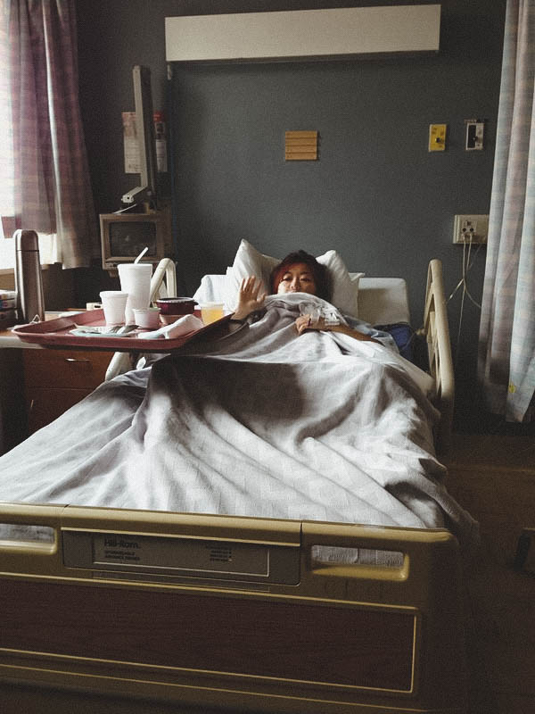
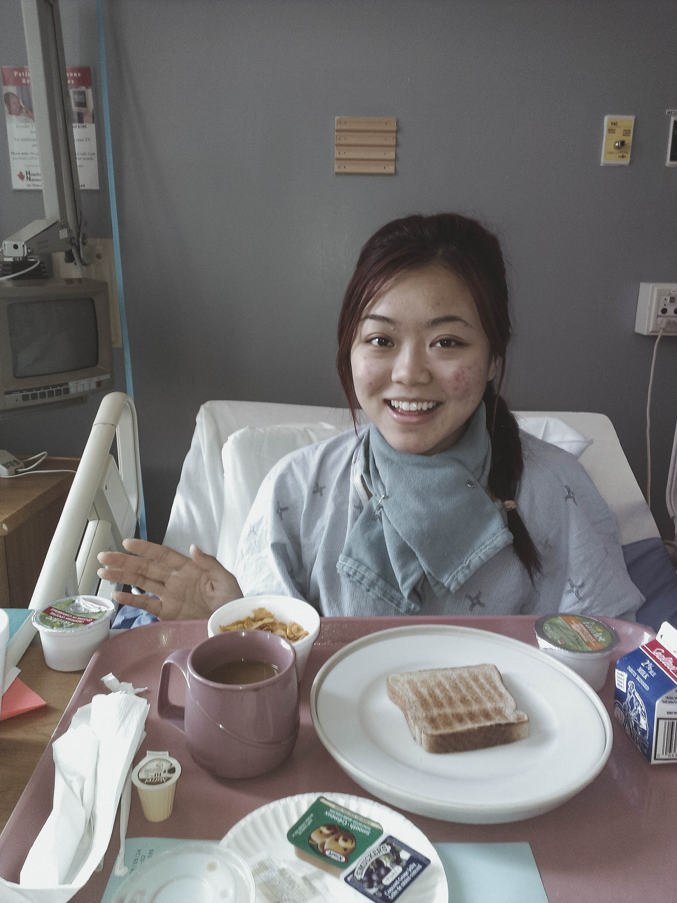
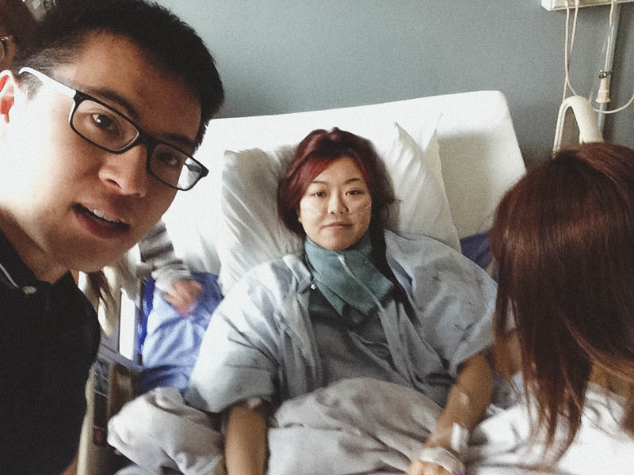

Thyroidectomy
In the spring of 2010, I started losing weight rapidly. I was in my first year of unversity and instead of gaining that freshman 15, I lost it instead. To any juvenile, it was the dream, and it was for a while.
A few months into the semester, I decided to do a body check at my family doctor's. When the results came back, I was told that my thryoid levels were off the charts. I was extremely hyperthyroid and I had to get it under control, fast. At the time, It didn't occur to me what that meant. All i knew was that I needed to start taking medication every day for the rest of my life, or at least until it started to get better.
Over the next 3 years, it was endless doctor's appointments with my endocrinologists, blood tests, ultrasounds and CT scans. My weight fluctuated from one extreme to another, and my appetite ranged. With the added stress and anxiety from my studies, the hyperthyroidism became a mild case of Grave's disease.
My endocrinologist described Grave's disease as an auto-immune disorder that targets more women than men in ages 30-50, but can occur in any age group. I was in my 3rd year at this point, and with graduation around the corner, I wanted to try my best to get this treated in order to focus on my studies. The treatment for Grave's diease would be more than just thyroid medication; it would be radioactive iodine therapy.
Radioactive iodine therapy consisted of ingesting I-131 by mouth. This would be at a higher dose than that used for imaging tests, and the goal would be for it to destroy the overactive cells in my thyroid gland that produces the thyroid hormone. I would have to set aside two weeks after ingesting I-131 to be isolated at home in my room (since I lived with my parents at the time). It was a difficult experience; time passed by like molasses. I was hopeful that by the end of it, I would come out a treated patient, and I was. I was in remission.
A year after the radioactive iodine therapy, my test results showed that the cells came back instead of staying away. My endocrinologist said that in order to treat it once and for all, she recommended a thyroidectomy. It would be a quick surgery, nothing too invasive, but it would require 1-2 months of recovery time. During the time we had this discussion, I was in my final year of school and knew that I needed to focus on graduation first. I waited until I graduated from my undergrad, went on my planned trip to Australia and New Zealand, and then underwent the thyroidectomy.
The surgery went smoothly. I stayed in the hospital for a few days, had the best support group, and was back home healing up nicely. It took a couple of days before the swelling in my neck went down, a few weeks before I could eat solid foods, and a few months before my voice got back to normal, but I was okay. To this day, I am doing well.
My voice has never been the same since then. I can't reach high notes when talking or singing anymore, and it can be discouraging at times. At the end of the day, my health is where it needs to be and that's all the matters. It's been a long journey, but I know now that my body is strong and I learned to love it even more than I did before.


